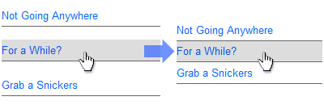

Sometimes, when I’m building a vertical navigation menu (like the one pictured above), Internet Explorer 6 will fight with me in a fairly annoying way: it adds a bunch of white space between the list items (specifically, I think it’s adding space below each list item). This space isn’t a margin, and it isn’t padding… it’s just empty, un-selectable space. So what’s going on, and how do we fix it?
The “what’s going on” part is simultaneously simple and perplexing: IE6 is treating all the empty space inside of your HTML lists – that is, the stuff between your closing </li> and next opening <li> tag — as real space. That’s the simple part. The confusing part is, why would it choose to interpret this space as “real,” when it ignores all of the other space between tags in pretty much every other situation out there? Well, that’s just IE6 for you, and that’s the perplexing bit.
Luckily, there is a really easy solution to this problem. Actually, truth be told, there are several solutions. Depending on your situation, each might be the right fix for you.
Fix #1: Remove All Whitespace
This is the most arcane of all the solutions, but to be honest, it’s the one I’ve used most often in the past – because I didn’t know about the other solutions! If you remove the white space from your code, this prevents IE from having anything to screw up. Specifically, if you remove the white space between your closing list item and the next opening list item, and your last closing list item and the end of your list, this will fix the problem. So you just need to turn this:
<ul>
<li><a href="#">First Item</a></li>
<li><a href="#">Second Item</a></li>
<li><a href="#">Third One!</a></li>
</ul>
Into this:
<ul>
<li><a href="#">First Item</a></li><li>
<a href="#">Second Item</a></li><li>
<a href="#">Third One!</a></li></ul>
Like I said, this isn’t exactly an elegant solution. But it does work, and it can be useful in places when CSS isn’t entirely reliable (like in HTML emails).
Fix #2: Float the Anchor Tags
Jon Hicks popularized this fix years ago. Basically, you float the anchor tags left, and then clear them left as well, like so:
ul a {
display: block;
float: left;
clear: left; }
This causes your links to behave like floated elements, which naturally don’t have any space between them. Unfortunately, it also prevents your links from filling all the horizontal space available, which would make a mess of the example I used above, because I’m relying on that width to create a background color and a border. However, if your links don’t have any fancy hover states or borders, this solution would work just fine.
Fix #3: Apply a Bottom Border
Another useful solution is to apply a border to your list item. Why does this work? I have no idea. Does a border just anywhere work? Nope. It has to be applied to the bottom of the list item (or to all four sides, as long as the bottom is included):
ul li {
border-bottom: 1px solid #666; }
I suppose the logic on this one is that the space is on the bottom of the element, so specifying a definitive edge to the box causes IE6 to recognize the “real” end of the element. Whatever the reasoning, it works, and it’s a good solution if you don’t mind a pixel of extra space in between your elements in return for getting rid of the great swaths of space IE had introduced. And sometimes it even works in the design. In the image above, for example, the border between the items could just as easily be applied to the list item instead of the anchor (which is where I had placed it initially).
Fix #4: Use Display: Inline
In my experience, the most useful solution of the four is to force your list items to display inline, instead of as a block-level element (which they are by default):
ul li {
display: inline; }
As far as I can tell, this technique was first popularized by Andy Budd waaay back in 2003 (of course, he was dealing with IE5 back then). I like this solution because it seems to do the least harm to my lists. It doesn’t add any additional space that I need to account for. It also doesn’t harm the size of my anchor tags: if I apply a “display: block” to my anchors, like I’ve done in the image above, my anchor will stretch out the “inline” list item to its standard size.
Any of these solutions will remove the extra space from between list items in IE6. The key is simply to pick the fix that works best with your particular design.